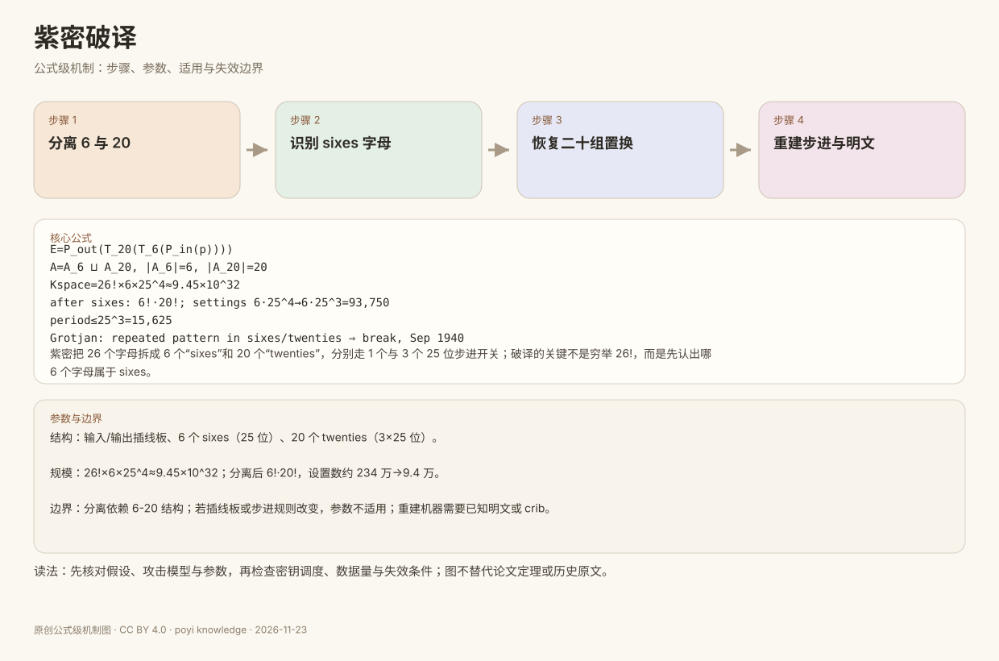
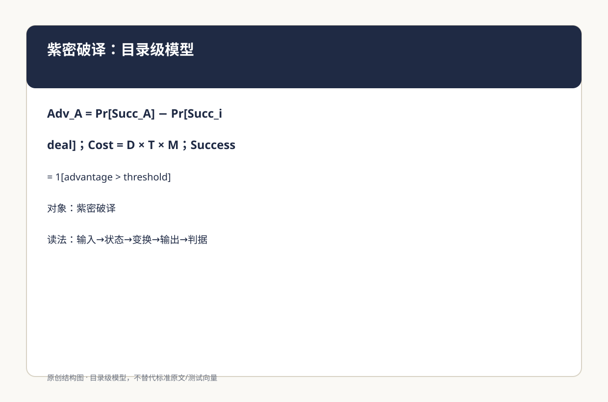

原理与机制
攻击：紫密破译（Purple Cryptanalysis）。### 6-20 结构
紫密（Purple）是日本 97 式字母打字机，输入插线板把 26 个字母映射到内部字母表，并固定分成 6 个 sixes 与 20 个 twenties。加密写作 E=P_{out}(T_{20}(T_6(P_{in}(p))))：sixes 经过 1 个 25 位步进开关，twenties 经过 3 个 25 位开关，随后输出插线板映回字母。### 破译路径
朴素密钥空间为 26!×6×25^4≈9.45×10^{32}。但 6-20 分割把字母置换限制为 6!·20!；一旦识别出 sixes 字母，设置数从 6×25^4=2,343,750 降到 6×25^3=93,750，开关周期不超过 25^3=15,625。Genevieve Grotjan 在 1940 年 9 月发现 sixes/twenties 的重复模式，使美国团队从 18 个月僵局转入重建紫密模拟机。

为什么重要
紫密破译说明“密钥空间大”不等于“不可破”：一个固定的 6-20 分割把 26!拆成 6!·20!，并让统计识别成为可能。它不是单纯依赖机器算力，而是先找结构不变量，再重建步进。
应用与实例
1.收集同一密钥期的外交报文，找可预测的开头或 crib。2.用频率与重复模式区分 sixes 与 twenties 字母。3.固定 sixes 的 25 位位置，恢复 20 字母置换。4.按步进规则展开 3 个 twenties 开关，匹配已知明文。5.用第二段报文验证设置，再重建整段明文。### 不能怎么用
不能把 6-20 结构当作“所有转子密码都适用”；不能只凭一段 crib 宣布唯一密钥；不能忽略插线板与步进规则的版本差异。

边界与攻击面
1.结构改变：若分割不再是 6-20，统计识别与 6!·20!约化不成立。2.已知明文不足：没有 crib 时难以确定步进相位。3.报文异文：转码、缩写或填充会破坏模式。4.设置不唯一：短报文可能留下多个候选，需要第二段验证。5.重建机器误差：开关接线或步进顺序错误会让解密全盘失败。
历史与背景
1939 年日本升级到紫密，美国 Signal Intelligence Service 在 18 个月内未能破译。1940 年 9 月 Genevieve Grotjan 发现 sixes/twenties 的重复关系；9 月 27 日团队读出首批报文。Leo Rosen 用 uniselector（6 组电话步进开关、25 个触点）重建模拟机。
技术参数与复算边界
该条目的形式模型是 (\mathrm{Adv}^{\mathrm{attack}}_A(\lambda)=\Pr[\mathrm{Game}_A(\lambda)=1]-\frac12)。输入：输入：紫密破译的公开参数、密钥/随机数与消息；变量说明：λ 安全参数；Game 把攻击目标写成挑战-响应游戏。 预期输出：按 紫密破译 的规范执行后得到可验证的输出或可比较的优势界。 复算必须给出输入、步骤、输出和单位；示例只演示流程，不替代标准测试向量。
复杂度由密钥长度、分组/状态规模、轮数、随机数质量和敌手模型共同决定；参数越界、版本差异与实现侧信道都可能使公式结论失效。已登记限制：该条目只给出形式模型与可复算步骤，不声称已完成生产实现、侧信道认证或第三方安全评估。
参数与状态规模
公式 (\mathrm{Adv}^{\mathrm{attack}}_A(\lambda)=\Pr[\mathrm{Game}_A(\lambda)=1]-\frac12) 的输入、输出和单位必须逐项登记；复算顺序为：1. 定义挑战与获胜条件 2. 给攻击者 oracle 访问 3. 计算优势并与目标界比较。
状态规模、密钥长度、分组长度和轮数决定复杂度；这些量不能从标题推断，必须以标准或实现文档为准。
测试向量与实现边界
标准测试向量只证明某组输入在某个实现中产生了预期输出，不证明所有参数都安全。记录测试向量时至少要写：算法/模式、密钥、明文或消息、随机数/IV、输出长度、实现版本。该条目已登记的限制是：该条目只给出形式模型与可复算步骤，不声称已完成生产实现、侧信道认证或第三方安全评估。
如果实现使用查表、分支或可变时间操作，算法层的证明不能替代侧信道评估；如果协议层没有认证，算法层的机密性也不能阻止替换或重放。
逐步示例与核验
形式模型与复算步骤
[\mathrm{Adv}^{\mathrm{attack}}_A(\lambda)=\Pr[\mathrm{Game}_A(\lambda)=1]-\frac12]
紫密破译的公开参数、密钥/随机数与消息；变量说明：λ 安全参数；Game 把攻击目标写成挑战-响应游戏。1.定义挑战与获胜条件。2.给攻击者 oracle 访问。3.计算优势并与目标界比较。边界：公式只覆盖已登记的参数与假设；参数取值、标准版本和实现细节仍以来源为准。
参考出处
- Wikipedia search entry for 紫密破译. https://zh.wikipedia.org/w/index.php?search=%E7%B4%AB%E5%AF%86%E7%A0%B4%E8%AF%91
- Handbook of Applied Cryptography (Menezes, van Oorschot, Vanstone). https://www.cacr.math.uwaterloo.ca/hac/